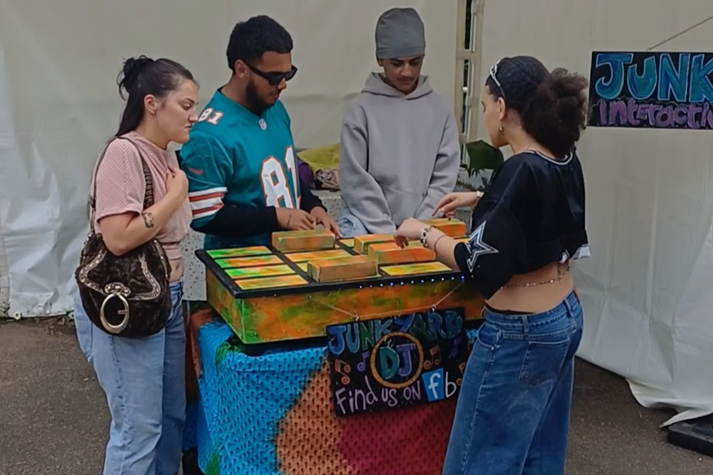

Hands-on entertainment
Guests can approach the setup, explore the controls and get a feel for mixing in a way that feels playful rather than intimidating.
A hands-on music experience that gives guests more than a playlist to listen to. They get to step up, have a go and become part of the atmosphere.
Junkyard DJ is a strong fit for events that need something a bit different: part entertainment, part activity, and much more memorable than background music alone.

What guests get
Guests can approach the setup, explore the controls and get a feel for mixing in a way that feels playful rather than intimidating.
Great for events where kids and adults are all part of the day and you want something with broad appeal.
It becomes a talking point and a shared experience, not just a soundtrack happening in the background.
Popular bookings
Perfect for family centric festivals that offer something a little alternative than a standard DJ set.
A brilliant extra for receptions, evening entertainment or relaxed daytime wedding setups where guests can dip in and try something interactive.
Ideal for birthdays, house parties, family celebrations and milestone events where you want something guests will remember.
A drop-in attraction that works well in community settings and family-friendly events.
Book Junkyard DJ
Use the contact page to discuss your ideas, and we’ll come back with availability and the best setup for your booking.